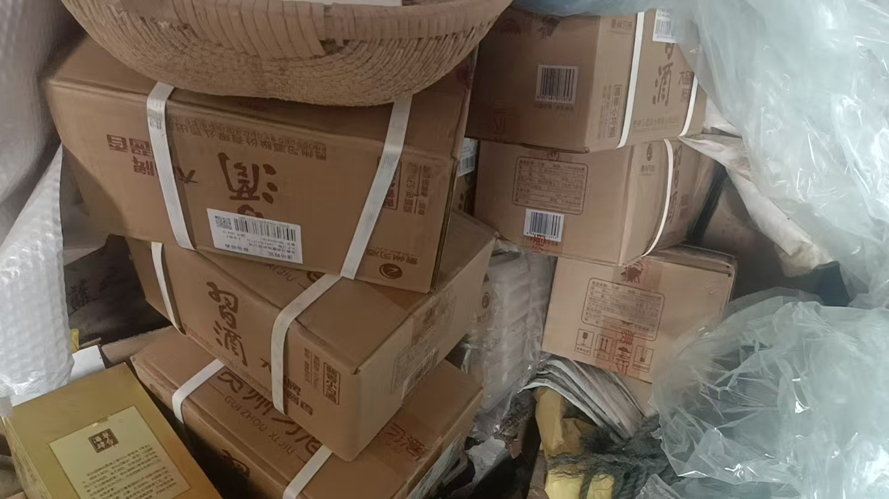
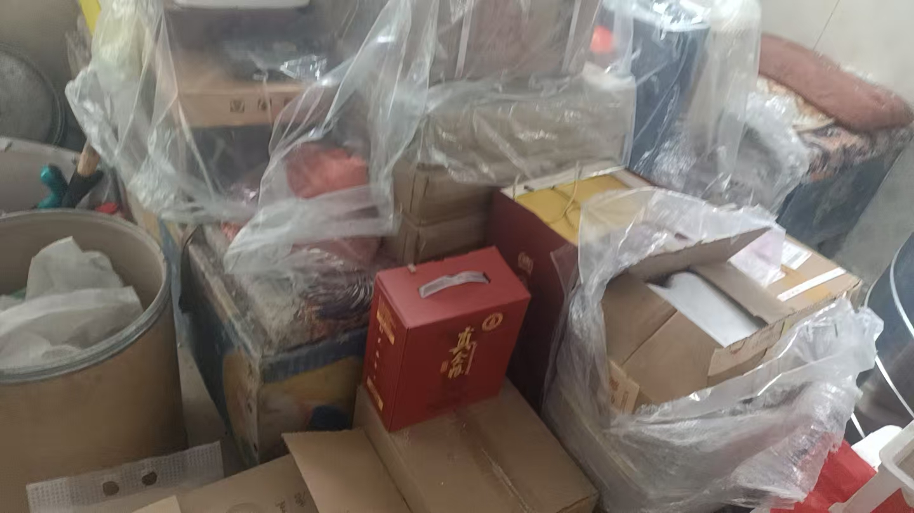
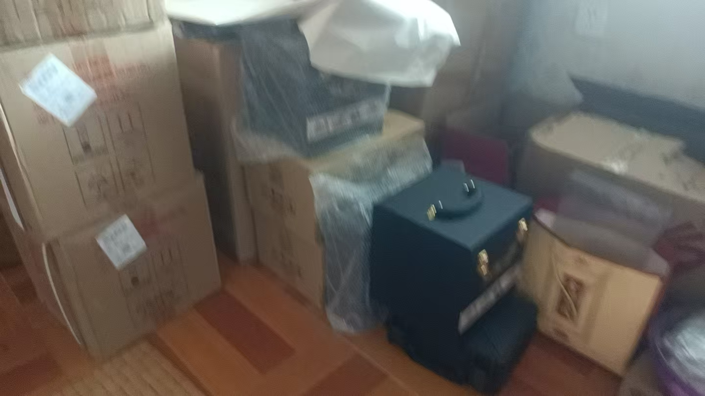
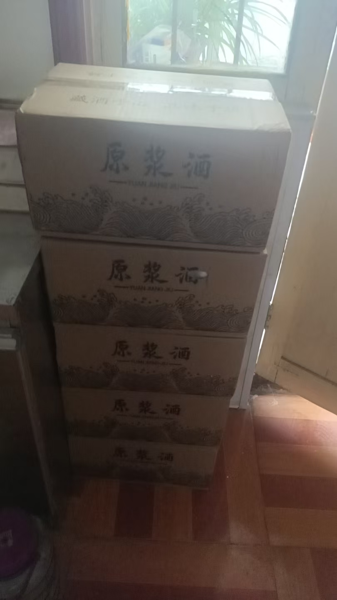

20260716交了法金，又发了888.88，又要去了地址，寄酒。解读阴宅
风水布局 原始对话记录交了法金，又发了888.88
又要去了地址，寄酒
为啥
满满的信任跟尊重
解读阴宅，讲的人服服在地
这就是超能力实战应用
绝不玩虚的




![[a0de51cad55cf7a5e9383e3d6b0b09ff 1.jpg|697]
家里的酒一垛一垛的
十五六年的茅台
二十七八年的五粮液
小习酒本来五百多一箱，非要买五年陈酒，一年涨五十块
我看标价750
茅台集团的规则
飞天茅台好像是一年增值二百吧
小习酒24瓶一箱，一年增值五十
樊少皇，吕良伟
演虚竹的那个
今天这家调理化解了夫家阴阳宅，又想到了娘家
娘家又是两家阴宅
爷爷三代，姥爷三代
爷爷奶奶一代，爷爷的爸爸妈妈一代，爷爷的爷爷奶奶一代
父亲还活着，就是替父亲供奉上三代
直系亲属网
姥姥姥爷一代，姥爷的爸妈一代，姥爷的爷奶一代
母亲舅舅还在，代替母亲舅父供奉上三代
解读阴宅之后：法金、寄酒与替父母供上三代
一、本页记录了什么
本页由几段零散记录拼成：开头讲"交了法金，又发了 888.88，又要去了地址，寄酒"；中段转到一次阴宅解读后的家族供奉思路；末段夹着关于老酒升值的闲谈。文字与图片/视频混合，这里按原记录转述。
二、"法金、888.88、寄酒"是怎么回事
记录自问自答："为啥？满满的信任跟尊重。"并称"解读阴宅，讲的人服服在地""这就是超能力实战应用，绝不玩虚的"。也就是说，这些是福主在解读阴宅之后的馈赠与配合（法金、红包、寄酒、给地址）。本站不作功效评价，也不引导付费。
三、阴宅解读与"替父母供上三代"
记录说："今天这家调理化解了夫家阴阳宅，又想到了娘家——娘家又是两家阴宅。"接着给出思路：父母健在，就替父母供奉上三代；由此串出一张"直系亲属网"。
四、夫家、娘家各三代
| 一系 | 三代（由近及远） |
|---|---|
| 爷爷一系 | 爷爷奶奶 → 爷爷的父母 → 爷爷的祖父母 |
| 姥爷一系 | 姥姥姥爷 → 姥爷的父母 → 姥爷的祖父母 |
记录强调：父亲还活着，就"替父亲供奉上三代"；母亲、舅舅还在，就"代替母亲舅父供奉上三代"。这是祭祖/供奉的亲属层级，与节日祭祖的惯例相呼应（参见本集群《祭祖方法·用品》《节日供奉祖先》）。
五、闲谈里的酒与增值
末段记录家里"酒一垛一垛"：十五六年的茅台、二十七八年的五粮液；小习酒"五百多一箱，非要买五年陈酒，一年涨五十块"，标价 750；并记"飞天茅台一年增值二百""小习酒 24 瓶一箱，一年增值五十"。这些是原文对酒价的随口记录，与风水无关，只是现场闲谈。
六、常见问题
问："法金""888.88""寄酒"是必须的吗？ 本页只是记录福主自愿的馈赠与感谢。没有任何"必须付费"的意思，本站也不作引导。
问："供奉上三代"是祭祀吗？ 可理解为祭祖、供奉的一层扩展，把健在长辈的上三代一并奉上，属家族祭祀习俗。
问：酒价那段说明什么？ 只说明老酒会随时间增值，属原始记录，无其他含义。
七、提醒
- 本页是阴宅解读与祭祖思路的记录，含收费/馈赠情节，均按原文转述；
- 亲属三代供奉属祭祖习俗，本站仅作文化介绍；
- 不承诺功效、不诱导付费、不制造恐慌。